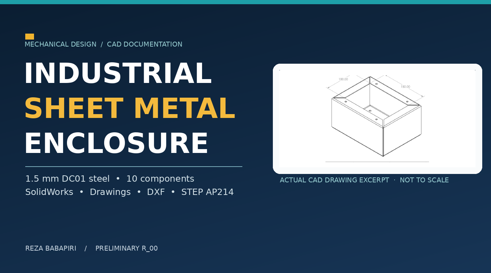
↗01 / Mechanical designPERSONAL PROJECT · SHEET METAL DESIGN
Industrial Sheet Metal Enclosure
SOLIDWORKS enclosure, 10-part assembly, A3 drawings, BOM, flat-pattern DXFs and STEP AP214.
View case study ↗MECHANICAL & MECHATRONICS ENGINEER
I connect mechanical design with mechatronics, control and simulation. This is a collection of the work, the decisions behind it, and the evidence that supports it.
01 / PROJECT INDEX
Professional design experience and documented personal and academic projects. Open a case study to follow the engineering question, approach, evidence and limitations.
Showing 14 of 14 projects
Design and manufacturing evidence, including a documented Fusion 360 CAM workflow and professional industrial equipment experience. V6 and gearbox design will be added only after completion.

↗SOLIDWORKS enclosure, 10-part assembly, A3 drawings, BOM, flat-pattern DXFs and STEP AP214.
View case study ↗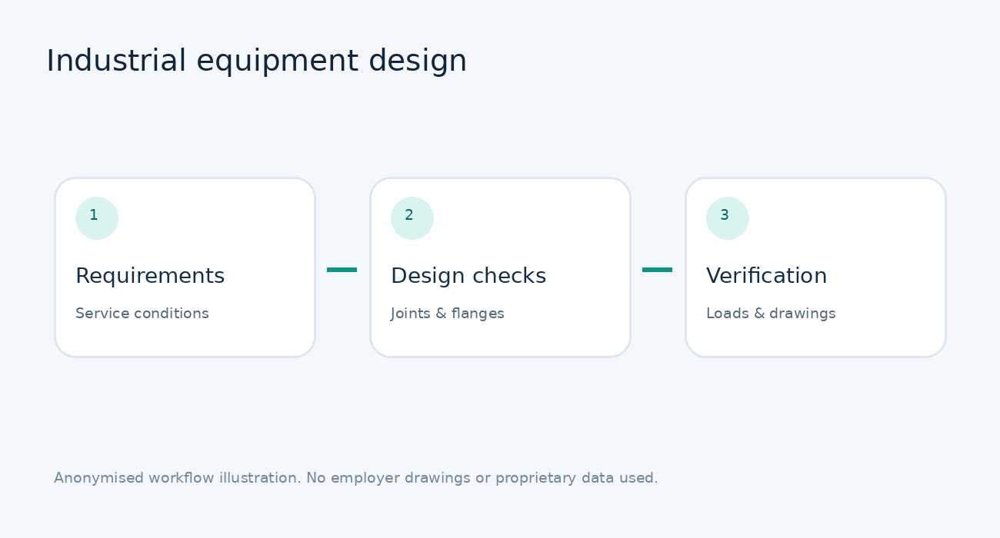
↗Bellows, flanges, piping components and mechanical design verification
View case study ↗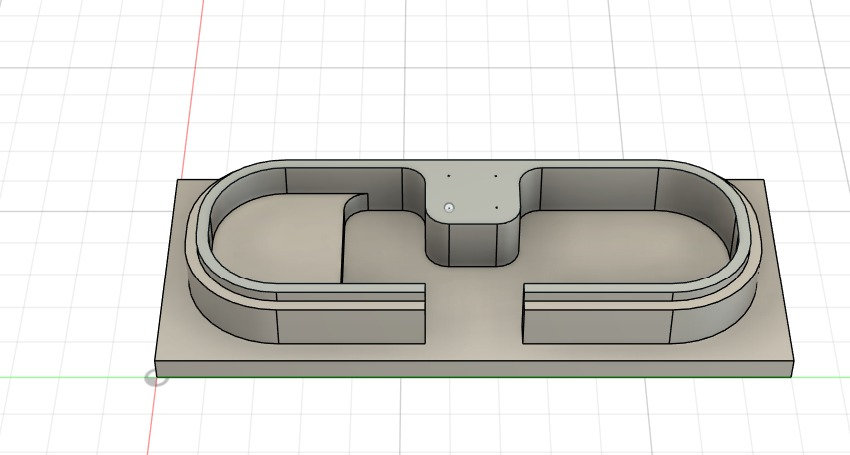
↗Aluminium 6061 milling plan with machining simulation and NC output
View case study ↗Hardware-oriented work connecting ultrasonic sensing, Arduino control logic and motor actuation. Hardware design, integration and embedded implementation are documented with original project evidence.
 ↗
↗Arduino Uno, ultrasonic sensing, servo scanning and DC motor driving
View case study ↗Mathematical models, controller selection, simulation, limitations and results using MATLAB and Simulink.
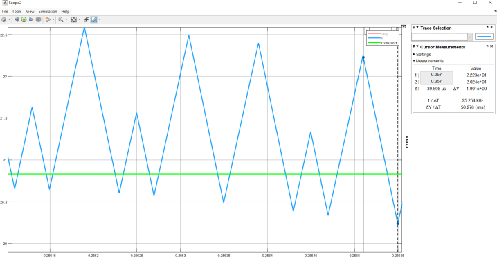
↗100 V to 48 V, 1 kW converter design with current and voltage feedback loops
View case study ↗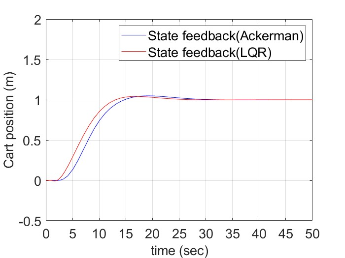
↗Cart–pendulum stabilization, tracking, saturation and anti-windup
View case study ↗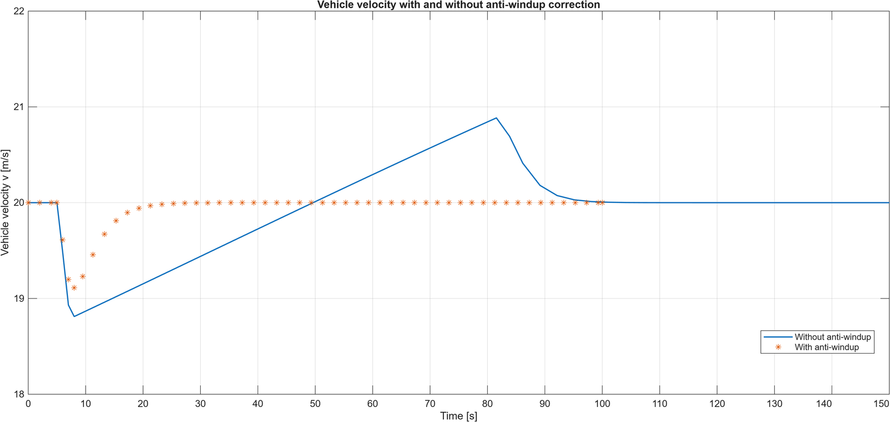
↗Speed tracking under hills, actuator saturation and parameter changes
View case study ↗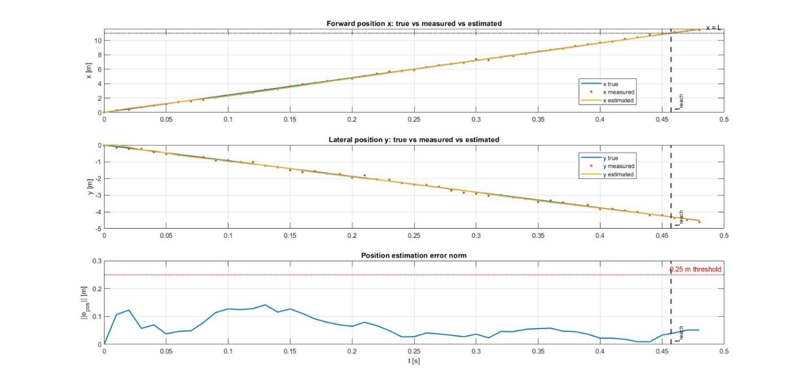
↗Tracking a moving target from noisy 2-D measurements
View case study ↗Longitudinal and lateral dynamics, active steering, bicycle stability, and SUMO–Python–Simulink EV/HEV scenario studies.
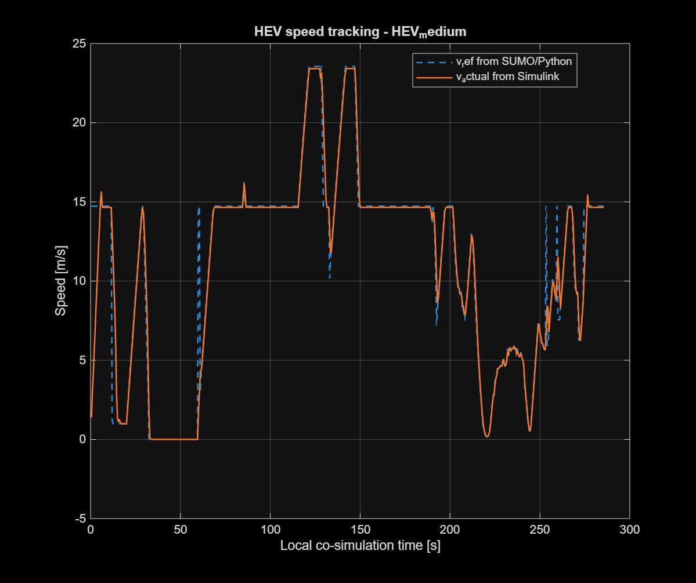
↗SUMO traffic + Python bridge + MATLAB/Simulink vehicle models
View case study ↗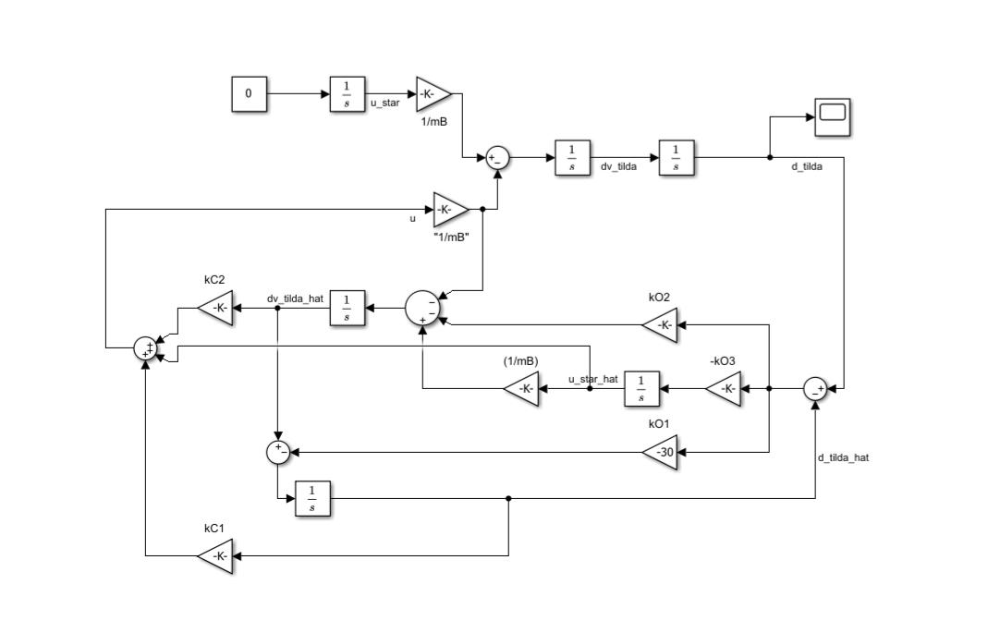
↗Distance-error regulation and disturbance estimation
View case study ↗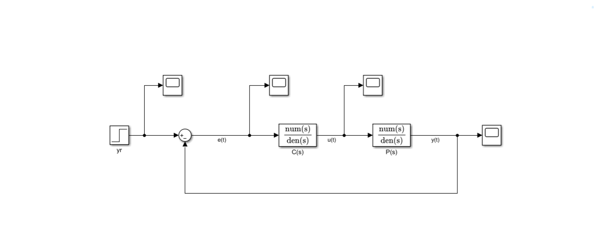
↗Speed-dependent stability, damping and steering response
View case study ↗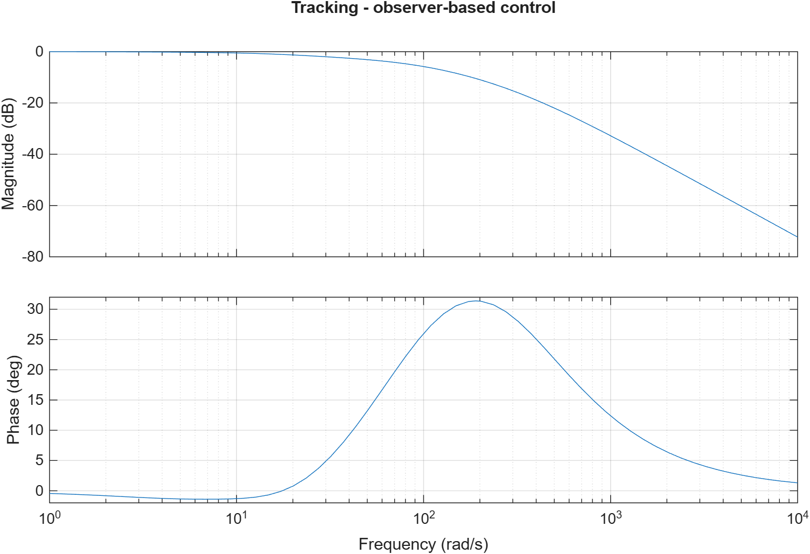
↗PI feedback versus observer-based yaw-rate regulation
View case study ↗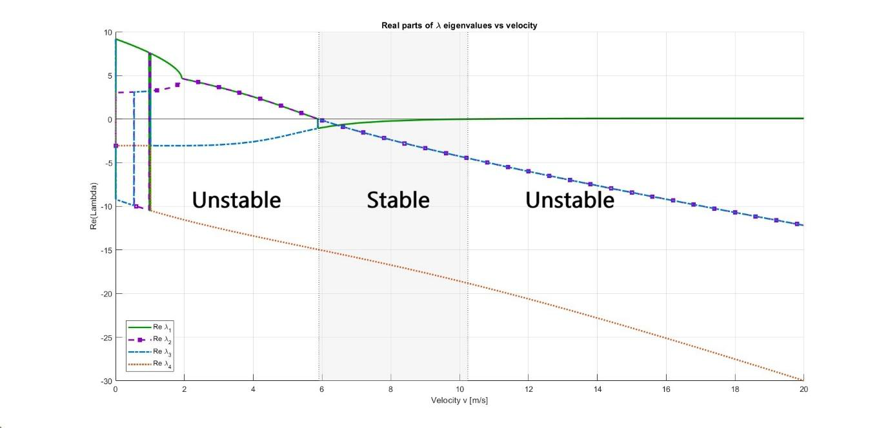
↗Speed-dependent roll dynamics and feedback stabilization
View case study ↗MATLAB wall-surface moss segmentation comparing a classical edge/active-contour pipeline with a DeepLabv3+ neural network; experiments and evaluation figures are provided.
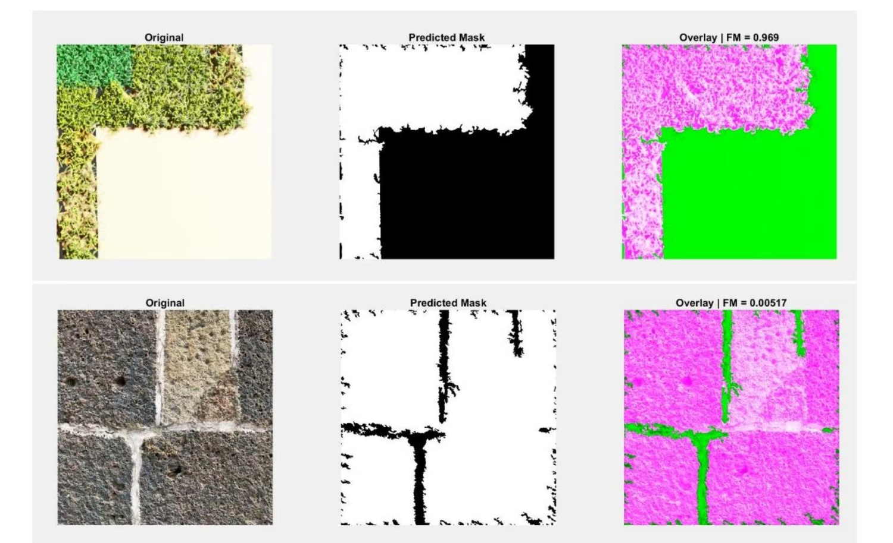
↗Hybrid active contour and deep-learning semantic segmentation
View case study ↗Search for a tool, project name or discipline.
02 / ABOUT MY WORK
I combine professional experience in industrial mechanical design with academic work in mechatronics, feedback control, embedded robotics and model-based engineering. This site highlights what was modelled, what was evaluated and what remains to be validated.
The engineering implementations presented here—CAD work, code, models, analyses, and hardware prototyping where applicable—were carried out by Reza Babapiri. Some university projects were formally submitted as group assignments; the original academic documents retain their submission credits.
03 / REPORTS & DOCUMENTATION
Five category collections, one cross-disciplinary overview and the enclosure report. The mechanical category PDF contains the two earlier projects; the enclosure has its own report.
04 / IN PROGRESS
These items are not being represented as finished projects until supporting material and independent technical work are available.
05 / CONTACT
Open to relevant Mechanical Design, Mechatronics, Control and Robotics roles.
Mechanical design, embedded robotics, control systems and automotive simulation — explained through technical decisions, simulation evidence and honest limitations.
I combine professional experience in industrial mechanical design with academic work in mechatronics, feedback control, embedded robotics and model-based engineering. This site highlights what was modelled, what was evaluated and what remains to be validated.
The engineering implementations presented here—CAD work, code, models, analyses, and hardware prototyping where applicable—were carried out by Reza Babapiri. Some university projects were formally submitted as group assignments; the original academic documents retain their submission credits.
Every category connects to the others. Open a case study for its scope, methods, results and limitations, or download the PDF collection for that discipline.
Design and manufacturing evidence, including a documented Fusion 360 CAM workflow and professional industrial equipment experience. V6 and gearbox design will be added only after completion.
Bellows, flanges, piping components and mechanical design verification
View case study ↗Aluminium 6061 milling plan with machining simulation and NC output
View case study ↗Hardware-oriented work connecting ultrasonic sensing, Arduino control logic and motor actuation. Hardware design, integration and embedded implementation are documented with original project evidence.
↗Arduino Uno, ultrasonic sensing, servo scanning and DC motor driving
View case study ↗Mathematical models, controller selection, simulation, limitations and results using MATLAB and Simulink.
100 V to 48 V, 1 kW converter design with current and voltage feedback loops
View case study ↗Cart–pendulum stabilization, tracking, saturation and anti-windup
View case study ↗Speed tracking under hills, actuator saturation and parameter changes
View case study ↗Tracking a moving target from noisy 2-D measurements
View case study ↗Longitudinal and lateral dynamics, active steering, bicycle stability, and SUMO–Python–Simulink EV/HEV scenario studies.
SUMO traffic + Python bridge + MATLAB/Simulink vehicle models
View case study ↗Distance-error regulation and disturbance estimation
View case study ↗Speed-dependent stability, damping and steering response
View case study ↗PI feedback versus observer-based yaw-rate regulation
View case study ↗Speed-dependent roll dynamics and feedback stabilization
View case study ↗MATLAB wall-surface moss segmentation comparing a classical edge/active-contour pipeline with a DeepLabv3+ neural network; experiments and evaluation figures are provided.
Hybrid active contour and deep-learning semantic segmentation
View case study ↗Five downloadable category collections plus one cross-disciplinary overview. Each PDF links back to this portfolio hub.
These items are not being represented as finished projects until supporting material and independent technical work are available.
Open to relevant Mechanical Design, Mechatronics, Control and Robotics roles.